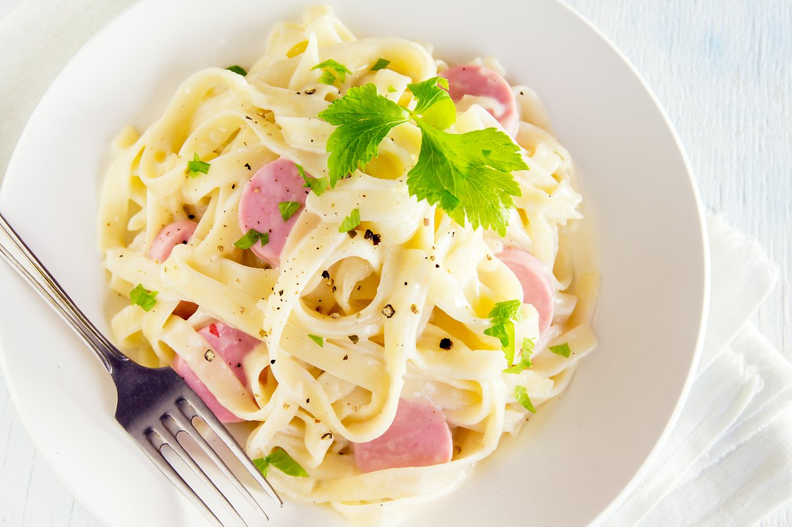

소스종류
크림소스 
알프레도(Alfredo)
치즈가 녹아들어 간 진한 치즈 향의 크림 파스타. 가장 기본적인 크림 파스타로 버터, 파르메산 치즈, 크림으로 만든 파스타 소스다.
버섯이나 닭고기 등 맛이 강하지 않은 것을 넣어 만들며 특히, 미국과 캐나다 등 북미 지역에서 인기가 많은 소스다.
카르보나라(Carbonara)
카본은 '석탄'을 뜻하는 이탈리아어로, 카르보나라의 시초는 광부들이 소금에 절인 고기와 달걀을 먹기 시작한 것에서 유래되었다.
대부분 레스토랑에서 카르보나라를 크림 파스타로 만들어 판매하지만, 오리지널은 크림 없이 오직 달걀노른자, 돼지고기 또는 베이컨, 치즈로만 만든다.